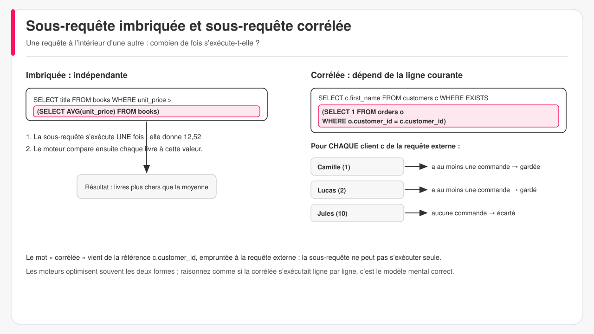

Une requête dans une requête
Une sous-requête est un SELECT placé à l’intérieur d’une autre requête, entre parenthèses. Elle répond à une question intermédiaire dont la réponse sert à la requête principale.
Demande : « Quels livres coûtent plus cher que le prix moyen du catalogue ? » En deux temps : calculer le prix moyen, puis comparer. Une sous-requête fait les deux en une seule instruction.

Sous-requête imbriquée (non corrélée)
SELECT title, unit_price
FROM books
WHERE unit_price > (SELECT AVG(unit_price) FROM books)
ORDER BY unit_price DESC, book_id;
Résultat attendu sur le jeu de données de référence (obtenu en exécutant la requête lors de la génération du cours).
| title | unit_price |
|---|---|
| SQL pas à pas | 34.90 |
| Python pour les curieux | 29.90 |
| Histoire de la Révolution française | 14.50 |
| Les Misérables | 12.90 |
La sous-requête (SELECT AVG(unit_price) FROM books) est indépendante de la requête externe : elle s’exécute une fois et renvoie une valeur unique (12,52). Le moteur compare ensuite chaque livre à cette valeur. Quand la sous-requête renvoie une seule valeur, on dit qu’elle est scalaire, et on peut utiliser >, =, <, etc.
IN : appartenir à une liste calculée
Quand la sous-requête renvoie plusieurs valeurs (une colonne, plusieurs lignes), on utilise IN.
SELECT customer_id, first_name
FROM customers
WHERE customer_id IN (SELECT customer_id FROM orders WHERE status = 'cancelled')
ORDER BY customer_id;
Résultat attendu sur le jeu de données de référence (obtenu en exécutant la requête lors de la génération du cours).
| customer_id | first_name |
|---|---|
| 2 | Lucas |
| 9 | Manon |
Les clients qui ont au moins une commande annulée. La sous-requête construit la liste des identifiants ; IN teste l’appartenance. Le même résultat s’obtiendrait avec une jointure, mais la sous-requête exprime directement la question : « ceux dont l’identifiant figure dans… ».
NOT IN et le piège de NULL
NOT IN sélectionne ce qui n’est pas dans la liste :
SELECT customer_id, first_name
FROM customers
WHERE customer_id NOT IN (SELECT customer_id FROM orders)
ORDER BY customer_id;
Résultat attendu sur le jeu de données de référence (obtenu en exécutant la requête lors de la génération du cours).
| customer_id | first_name |
|---|---|
| 10 | Jules |
| 11 | Inès |
| 12 | Arthur |
Les clients sans commande. Ici tout se passe bien parce que orders.customer_id est NOT NULL. Mais si la liste contient un seul NULL, NOT IN ne renvoie plus aucune ligne. Pourquoi : x NOT IN (1, NULL) signifie x <> 1 AND x <> NULL, et x <> NULL est inconnu, donc l’ensemble n’est jamais vrai.
SELECT customer_id
FROM customers
WHERE customer_id NOT IN (SELECT 1 UNION ALL SELECT NULL)
ORDER BY customer_id;
Résultat attendu sur le jeu de données de référence (obtenu en exécutant la requête lors de la génération du cours).
| customer_id |
|---|
Zéro ligne, sans erreur. Il y aurait pourtant 11 clients différents de 1. C’est l’une des erreurs les plus sournoises de SQL. Deux protections : filtrer les NULL dans la sous-requête (WHERE colonne IS NOT NULL), ou utiliser NOT EXISTS.
EXISTS et NOT EXISTS
EXISTS (sous-requête) est vrai si la sous-requête renvoie au moins une ligne, quelles que soient les colonnes. On écrit conventionnellement SELECT 1. NOT EXISTS est vrai si elle ne renvoie aucune ligne.
SELECT b.book_id, b.title
FROM books AS b
WHERE NOT EXISTS (SELECT 1 FROM order_items AS oi WHERE oi.book_id = b.book_id)
ORDER BY b.book_id;
Résultat attendu sur le jeu de données de référence (obtenu en exécutant la requête lors de la génération du cours).
| book_id | title |
|---|---|
| 6 | Arsène Lupin, gentleman-cambrioleur |
| 13 | Le Livre de la jungle |
Les livres jamais commandés. Remarquez oi.book_id = b.book_id : la sous-requête utilise une colonne de la requête externe (b). Elle est donc corrélée.
Sous-requête corrélée
Une sous-requête est corrélée quand elle fait référence à une colonne de la requête externe : elle ne peut plus s’exécuter seule, et le raisonnement est « pour chaque ligne de la requête externe, évaluer la sous-requête avec les valeurs de cette ligne ».
SELECT c.customer_id, c.first_name
FROM customers AS c
WHERE EXISTS (SELECT 1 FROM orders AS o
WHERE o.customer_id = c.customer_id AND o.status = 'pending')
ORDER BY c.customer_id;
Résultat attendu sur le jeu de données de référence (obtenu en exécutant la requête lors de la génération du cours).
| customer_id | first_name |
|---|---|
| 1 | Camille |
| 6 | Nathan |
Les clients qui ont une commande en attente. Pour le client 1, la sous-requête cherche ses commandes pending : il y en a une, EXISTS est vrai, le client est gardé.
Autre usage, avec un agrégat : les livres plus chers que la moyenne de leur propre catégorie.
SELECT b.title, b.category_id, b.unit_price
FROM books AS b
WHERE b.unit_price > (SELECT AVG(b2.unit_price)
FROM books AS b2
WHERE b2.category_id = b.category_id)
ORDER BY b.book_id;
Résultat attendu sur le jeu de données de référence (obtenu en exécutant la requête lors de la génération du cours).
| title | category_id | unit_price |
|---|---|---|
| Les Misérables | 1 | 12.90 |
| Le Crime de lOrient-Express | 2 | 7.90 |
| Arsène Lupin, gentleman-cambrioleur | 2 | 7.50 |
| Vingt mille lieues sous les mers | 3 | 10.50 |
| Frankenstein | 3 | 9.90 |
| Histoire de la Révolution française | 4 | 14.50 |
| Le Livre de la jungle | 6 | 8.00 |
| SQL pas à pas | 5 | 34.90 |
La moyenne n’est plus unique : elle change selon la catégorie de la ligne courante. C’est impossible avec une sous-requête non corrélée.
Une sous-requête dans le SELECT ou le FROM
Une sous-requête scalaire peut fournir une colonne :
SELECT c.customer_id,
(SELECT COUNT(*) FROM orders AS o WHERE o.customer_id = c.customer_id) AS orders_count
FROM customers AS c
ORDER BY c.customer_id;
Résultat attendu sur le jeu de données de référence (obtenu en exécutant la requête lors de la génération du cours).
| customer_id | orders_count |
|---|---|
| 1 | 4 |
| 2 | 2 |
| 3 | 2 |
| 4 | 1 |
| 5 | 1 |
| 6 | 1 |
| 7 | 1 |
| 8 | 1 |
| 9 | 1 |
| 10 | 0 |
| 11 | 0 |
| 12 | 0 |
Dans le FROM, elle devient une table dérivée, qui doit avoir un alias sur PostgreSQL et MySQL. Exemple : la moyenne des montants de commande.
SELECT ROUND(AVG(t.total), 2) AS average_order_total
FROM (SELECT order_id, SUM(quantity * unit_price) AS total
FROM order_items
GROUP BY order_id) AS t;
Résultat attendu sur le jeu de données de référence (obtenu en exécutant la requête lors de la génération du cours).
| average_order_total |
|---|
| 26.62 |
On agrège d’abord par commande (une ligne par commande), puis on calcule la moyenne de ces totaux : impossible d’écrire AVG(SUM(…)) directement.
Jointure ou sous-requête ?
| Situation | Choix habituel |
|---|---|
| Afficher des colonnes de l’autre table | Jointure |
| Tester seulement l’existence d’une correspondance | EXISTS |
| Chercher l’absence de correspondance | NOT EXISTS (ou LEFT JOIN … IS NULL) |
| Comparer à un agrégat (moyenne, maximum) | Sous-requête scalaire |
| Liste de valeurs à tester, sans NULL possible | IN |
| Liste pouvant contenir NULL, négation | NOT EXISTS, jamais NOT IN |
Les moteurs savent souvent traduire l’une en l’autre ; choisissez la forme la plus lisible et la plus sûre.
Exercice guidé : livres commandés au moins une fois
Écrivez la liste des livres qui ont été commandés au moins une fois, de deux façons : avec IN, puis avec EXISTS.
Afficher la correction détaillée
Avec IN :
SELECT b.book_id, b.title
FROM books AS b
WHERE b.book_id IN (SELECT oi.book_id FROM order_items AS oi)
ORDER BY b.book_id;
Résultat attendu sur le jeu de données de référence (obtenu en exécutant la requête lors de la génération du cours).
| book_id | title |
|---|---|
| 1 | Les Misérables |
| 2 | Le Rouge et le Noir |
| 3 | Germinal |
| 4 | Le Crime de lOrient-Express |
| 5 | Le Chien des Baskerville |
| 7 | Vingt mille lieues sous les mers |
| 8 | La Machine à explorer le temps |
| 9 | Frankenstein |
| 10 | La Guerre des Gaules |
| 11 | Histoire de la Révolution française |
| 12 | Alice au pays des merveilles |
| 14 | Python pour les curieux |
| 15 | SQL pas à pas |
Avec EXISTS (corrélée) :
SELECT b.book_id, b.title
FROM books AS b
WHERE EXISTS (SELECT 1 FROM order_items AS oi WHERE oi.book_id = b.book_id)
ORDER BY b.book_id;
Résultat attendu sur le jeu de données de référence (obtenu en exécutant la requête lors de la génération du cours).
| book_id | title |
|---|---|
| 1 | Les Misérables |
| 2 | Le Rouge et le Noir |
| 3 | Germinal |
| 4 | Le Crime de lOrient-Express |
| 5 | Le Chien des Baskerville |
| 7 | Vingt mille lieues sous les mers |
| 8 | La Machine à explorer le temps |
| 9 | Frankenstein |
| 10 | La Guerre des Gaules |
| 11 | Histoire de la Révolution française |
| 12 | Alice au pays des merveilles |
| 14 | Python pour les curieux |
| 15 | SQL pas à pas |
Les deux donnent 13 livres (les 15 moins les deux jamais commandés). EXISTS s’arrête à la première ligne trouvée ; IN raisonne sur une liste de valeurs. Ici le résultat est identique parce que order_items.book_id n’est jamais NULL.
Exercice autonome : commandes plus grosses que la moyenne
Listez les commandes dont le total est supérieur à la moyenne des totaux de commandes (environ 26,6 €). Affichez order_id et le total arrondi, du plus gros au plus petit.
Afficher la correction détaillée
SELECT t.order_id, ROUND(t.total, 2) AS total
FROM (SELECT order_id, SUM(quantity * unit_price) AS total
FROM order_items
GROUP BY order_id) AS t
WHERE t.total > (SELECT AVG(t2.total)
FROM (SELECT order_id, SUM(quantity * unit_price) AS total
FROM order_items
GROUP BY order_id) AS t2)
ORDER BY t.total DESC, t.order_id;
Résultat attendu sur le jeu de données de référence (obtenu en exécutant la requête lors de la génération du cours).
| order_id | total |
|---|---|
| 8 | 64.80 |
| 2 | 40.40 |
| 4 | 34.90 |
| 13 | 29.80 |
| 10 | 28.80 |
| 1 | 27.70 |
Une table dérivée calcule les totaux par commande ; une sous-requête scalaire calcule leur moyenne ; la requête externe compare. La table dérivée est répétée : le chapitre 12 montrera comment la nommer une fois pour toutes dans une vue.
Exercice de débogage : zéro ligne inattendue
On cherche les clients dont le téléphone n’est pas porté par un client de Paris. Cette requête renvoie 0 ligne alors que des clients répondent à la demande. Pourquoi ?
SELECT first_name FROM customers
WHERE phone NOT IN (SELECT phone FROM customers WHERE city = 'Paris');
Afficher la correction détaillée
Parmi les clients de Paris, Arthur (n° 12) a un téléphone NULL. La sous-requête renvoie donc une liste contenant NULL, et NOT IN ne peut plus être vrai pour aucune ligne.
SELECT first_name
FROM customers
WHERE phone NOT IN (SELECT phone FROM customers WHERE city = 'Paris');
Résultat attendu sur le jeu de données de référence (obtenu en exécutant la requête lors de la génération du cours).
| first_name |
|---|
Correction par NOT EXISTS (ou en ajoutant AND phone IS NOT NULL dans la sous-requête) :
SELECT c.customer_id, c.first_name
FROM customers AS c
WHERE c.phone IS NOT NULL
AND NOT EXISTS (SELECT 1 FROM customers AS p
WHERE p.city = 'Paris' AND p.phone = c.phone)
ORDER BY c.customer_id;
Résultat attendu sur le jeu de données de référence (obtenu en exécutant la requête lors de la génération du cours).
| customer_id | first_name |
|---|---|
| 1 | Camille |
| 7 | Chloé |
| 8 | Louis |
| 10 | Jules |
| 11 | Inès |
Valider · question 1
Voir la justification de chaque réponse
- Incorrect — Elle contient un agrégat : Un agrégat n’a rien à voir avec la corrélation.
- Bonne réponse — Elle utilise une colonne de la requête externe : Elle dépend donc de la ligne courante et s’évalue pour chaque ligne.
- Incorrect — Elle est placée dans le FROM : Une table dérivée est généralement indépendante.
Valider · question 2
Voir la justification de chaque réponse
- Incorrect — Le moteur plante silencieusement : Aucune panne.
- Bonne réponse — La comparaison avec NULL est inconnue, donc la condition globale n’est jamais vraie : x <> NULL n’est ni vrai ni faux.
- Incorrect — NULL est égal à zéro : NULL n’est pas une valeur.
Valider · question 3
Voir la justification de chaque réponse
- Incorrect — NOT IN sur une colonne nullable : Elle risque le piège de NULL.
- Bonne réponse — NOT EXISTS ou LEFT JOIN … IS NULL : Ces formes se comportent correctement même avec des NULL.
- Incorrect — COUNT(*) = 0 dans le WHERE : Un agrégat ne peut pas figurer dans le WHERE.